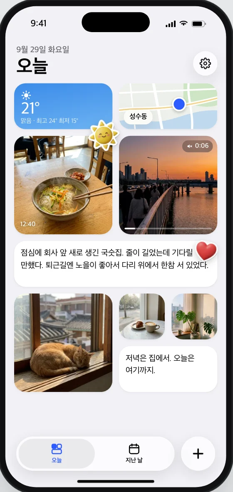
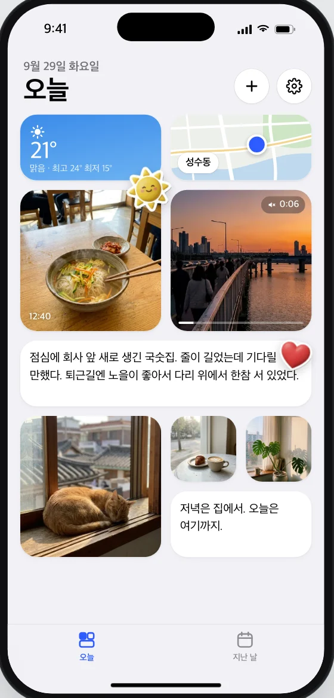
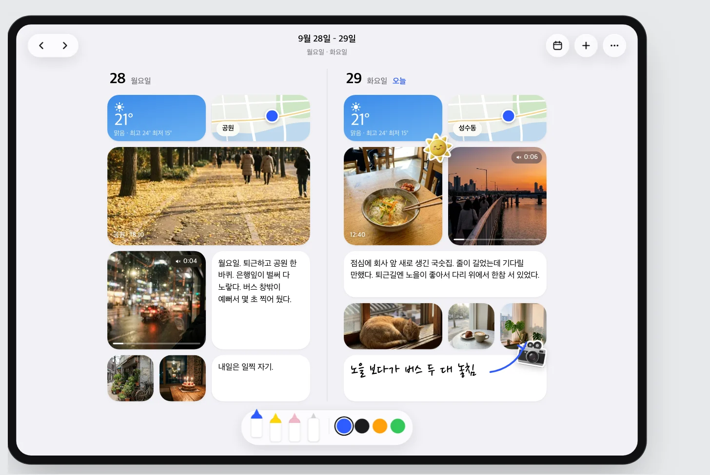
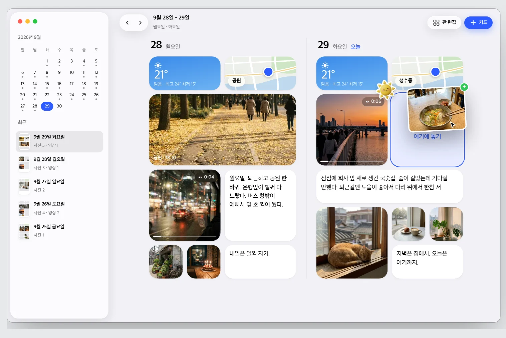
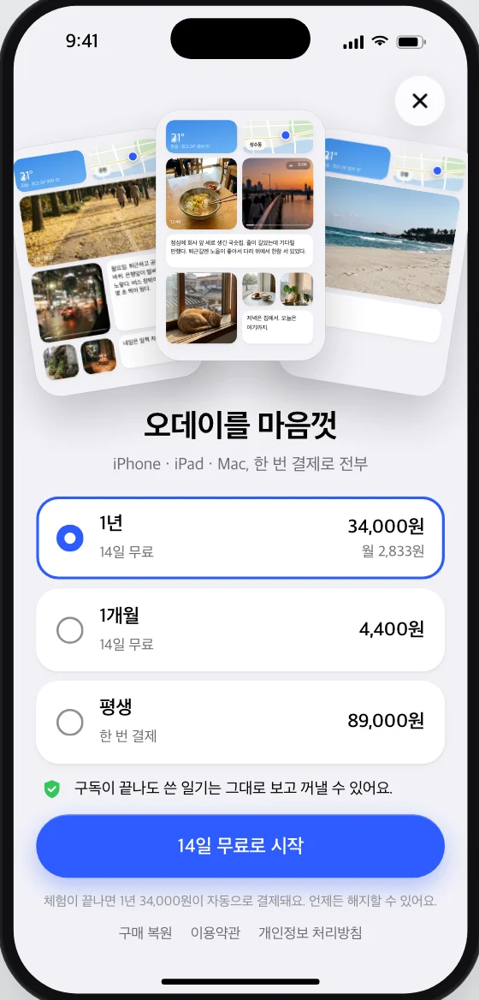

카드 58종. 넣는 것, 채워 주는 것, 꾸미는 것
사진, 영상, 글 같은 넣는 카드와 날씨, 해와 달, 걸음 수, 잠처럼 앱이 먼저 채워 두는 카드, 그리고 제목과 색 칩처럼 판을 꾸미는 카드. 값을 지어내지 않아요. 채워지기 전에는 그냥 비어 있어요.
사진영상글날씨장소해와 달오늘의 질문기분먹은 것N일 전 오늘미래의 나에게링크걸음 수잠운동들은 음악일정목소리손글씨본 것읽는 책인용다닌 곳하루 띠오늘의 색제목색 칩그 밖 31종
사진 한 장, 10초 영상, 한 줄 글. 날씨와 장소는 먼저 채워져 있어요. 홈 화면을 꾸미던 손버릇 그대로 길게 누르고, 끌어 옮기고, 크기를 바꿔요.
App Store 에 곧 올라갑니다
새 날 판은 비어 있지 않아요. 날씨와 장소가 먼저 앉아 있고, 큰 사진 자리 하나만 비어 있어요.
영상은 딱 10초까지. 글은 그 자리에서 써요. 추가 시트에서 카드를 골라 판에 놓아요.
홈 화면처럼 카드가 흔들리고, 끌면 다른 카드가 비켜요. 크기는 허용된 것만 골라요.
달력 칸마다 그날 판의 작은 배치도. 쓰지 않은 날은 그냥 비어 있어요.
사진, 영상, 글 같은 넣는 카드와 날씨, 해와 달, 걸음 수, 잠처럼 앱이 먼저 채워 두는 카드, 그리고 제목과 색 칩처럼 판을 꾸미는 카드. 값을 지어내지 않아요. 채워지기 전에는 그냥 비어 있어요.

왼쪽에 어제, 오른쪽에 오늘. 사이드바에는 달력과 최근 판. Mac 에서는 Finder 나 사진 앱에서 사진을 끌어 놓으면 빈 자리에 앉고, iPad 에서는 Apple Pencil 로 손글씨 카드를 써요.
iCloud 로 이어지니 iPhone 에서 붙인 카드가 iPad 와 Mac 에도 그대로 있어요.

일기는 기기와 내 iCloud 에만 있어요. 저희 서버는 없어요. 앱을 업데이트하기 전에 사본을 남기고, 지운 것도 30일은 되살릴 수 있어요.
구독이 끝나도 쓴 일기는 그대로 보고, 언제든 파일이나 PDF 로 꺼낼 수 있어요.

첫 판 하나는 그냥 써 봐요. 둘째 판부터는 14일 무료 체험 뒤 구독이에요. 한 번 결제로 iPhone, iPad, Mac 전부 써요.

iPhone 과 iPad 는 iOS 17 이상, Mac 은 macOS 14 이상이에요. iOS 26 에서는 Liquid Glass 가 적용돼요. 한 번 결제로 세 기기에서 같이 써요.
기기 안과 내 iCloud 에만 있어요. 저희가 운영하는 서버가 없어서 저희는 볼 수 없어요. 자세한 건 개인정보 처리방침에 있어요.
일기에 붙는 영상이라 그래요. 고를 때 구간을 잘라 넣고, 판에서는 소리 없이 돌아요. 원본은 보관하지 않아요.
그대로 보여요. 새 판을 만드는 것만 막히고, 보기와 내보내기는 계속 돼요.
건강 앱 권한을 허락하면 그날 값만 읽어 카드에 적어요. 읽기만 하고, 어디로도 보내지 않아요.
출시되면 이 자리에 받기 버튼이 생겨요.
문의하기